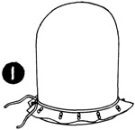

1952—How to Make Hats
by Ruby Carnahan
Blocking a Fur Felt Body Using Combination of a Blocked Crown and Brim Cut from a Pattern
MATERIAL REQUIRED
- Fur felt body
- Utility head block in your correct headsize
- Brim pattern—instructions pattern making page 17.
- 3/4 of a yard of headband ribbon
- Utility brim block
BLOCKING FELT CROWN
Wrap felt body in a damp cloth for several hours before blocking. Pull felt body over Utility head block, steam, pull and stretch felt down until all wrinkles have been removed and felt fits crown block perfectly. Pin felt to block (with push pins) and tie a blocking cord around block over felt. Let felt dry on block (Illus. 1).
Measure your head from back to front the depth crown is to be and from side to side and mark these measurements on felt, and draw a line around block on felt.
Mark back and front of crown on felt.
When felt crown is dry, remove crown from block and cut off excess felt on crown 1/2" below line on felt.
MAKING FELT BRIM
(Illus. 2) Use felt cut off from crown for brim, cut open at narrowest place. Lay felt on a pressing board and cover with a damp cloth, steam press (Illus. 3), stretching felt as you press until felt is stretched enough to fit brim pattern.
(Illus. 4) Place brim pattern on felt, and mark around pattern with tailor's chalk) on felt. Cut out felt brim 1/2" from this line. Mark back and front of brim on felt.
(Illus. 5) Sew brim together in back using a furring stitch, and slip brim on Utility brim block; allow 1/2" of felt to turn up around headsize on block.
(Illus. 6) Cover felt brim with a damp cloth and press felt into headsize. Tie a blocking cord around headsize on block over felt and pin brim edge of felt to brim block (using push pins). Let brim dry on block (Illus. 7)
Remove felt brim from block, match markings on brim and crown.
Slip crown over headsize on brim and sew crown and brim together, using a small overcast stitch (Illus. 8).
WIRING BRIM
Measure a wire to fit edge of brim and join wire with a wire joiner. Turn felt brim edge over wire 1/4" and pin around brim. Sew felt to under side of brim using a small overcast stitch.
Finish headsize with a swirled headband.